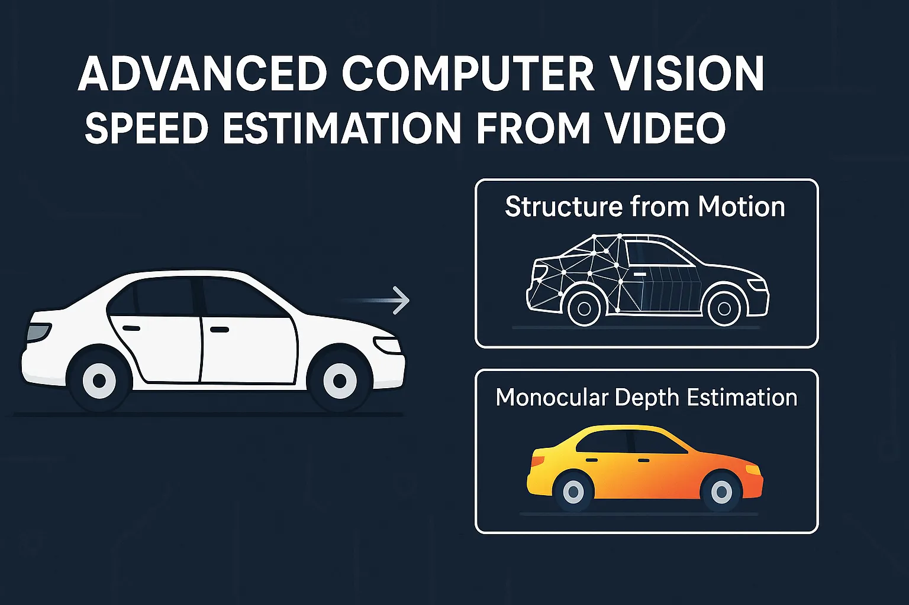

FeaturedAI
FeaturedAIBlog Posts
Explore all articles on AI, Technology, History & More
19
Total Posts
10
AI Articles
4
Tech Posts
3
History Articles
FeaturedAILatest articles
 AI
AIWill Artificial Intelligence Replace My Job?
Will AI take your job? Two questions answer most of it: is it feasible, and what does it cost?Read article AI
AITypes of Agentic AI and How to Build Your First Agent
The five common types of AI agents, what each one is good for and where each one breaks, plus a practical path to building your first agent.Read article AI
AIAgentic AI in Depth: Planning Models, Memory and Orchestration
Part 3 of the agentic AI series: how agents plan (BDI, ReAct, ReWOO), how they use tools and memory, and the orchestration patterns that keep them reliable in production.Read article AI
AIAgentic AI vs Generative AI: Architectural Differences and Chatbot Impact
Generative AI writes an answer; agentic AI runs a loop until a task is done. The architectural differences, the trade-offs in production, and what changes for chatbots.Read article AI
AIWhat Are AI Agents or Agentic AI?
An AI agent doesn't just answer questions. It plans, uses tools and checks its own work. How agentic AI works, where it helps, and where it breaks.Read article AI
AIFrom Prediction to Impact: What Artificial Intelligence Actually Means for You
AI already shapes your feed, your bank's fraud checks and your doctor's scans. What machine learning actually does in everyday life, what it costs, and how to stay in control.Read article Technology
TechnologyMac Keyboard Shortcuts: A Practical Guide for macOS
The Mac keyboard shortcuts worth learning first, especially if you're coming from Windows: editing, Finder, screenshots, windows, text navigation, Terminal and code editors.Read article History
HistoryThe Ergenekon Epic: An Ancient Turkish Legend
The Ergenekon epic retold in plain English: a defeated people hidden in a mountain valley for four hundred years, an iron mountain melted with seventy bellows, and a grey wolf…Read article History
HistoryThe Oğuz Kağan Epic: An Ancient Turkish Legend
The legend of Oğuz Kağan, the mythical ancestor of the Oghuz Turks, retold in plain English: a child who refused milk, the beast in the forest, two wives from the sky and the…Read article AI
AIThe Role of Artificial Intelligence in Defense Technologies
Defense software is among the best-protected in the world. What happens to that protection when attackers, and defenders, have AI?Read article AI
AIAnomaly Detection in Machine Learning: Methods and Math
How machine learning finds the rare data points that don't fit: supervised, unsupervised and semi-supervised methods, the math behind them, and the problems you run into in…Read article Finance
FinanceAre AI Models Making Us Earn Money We Don't Deserve?
When AI does in minutes what used to take a day, is your salary still deserved? Why that feeling is understandable, and why tools have never made skilled work worth less.Read article Technology
TechnologyFrom Netflix to TikTok: How AI Knows What You Like
How recommendation systems at Netflix, TikTok and Spotify decide what to show you, explained without math: collaborative filtering, content-based filtering, and why your feed gets…Read article
TechnologyHow to Estimate Object Speed from Video
Can you measure how fast something moves in a video without a calibrated camera or a known reference?Read article Technology
TechnologyOne of the Precious Metals: Data
Why data has become one of the most valuable resources of our time: what makes it different from oil or gold, why AI depends on it, and who gets to own it.Read article AI
AIWhat's Machine Learning, Really?
Machine learning doesn't learn the way people do. It fits a mathematical function to data. A plain explanation of how that works, the three main types, and why the limits matter.Read article Finance
FinanceWhy High Value-Per-Kilogram Exports Are the Key to National Prosperity
Why export value per kilogram says more about a country's prosperity than GDP does: a cheese example, the trap of cheap high-volume exports, India and Japan compared, and the…Read article History
HistoryWhy Is Knowing History Important?
A quick search can tell you almost anything, but it can't give you judgement.Read articleNo articles match that filter.